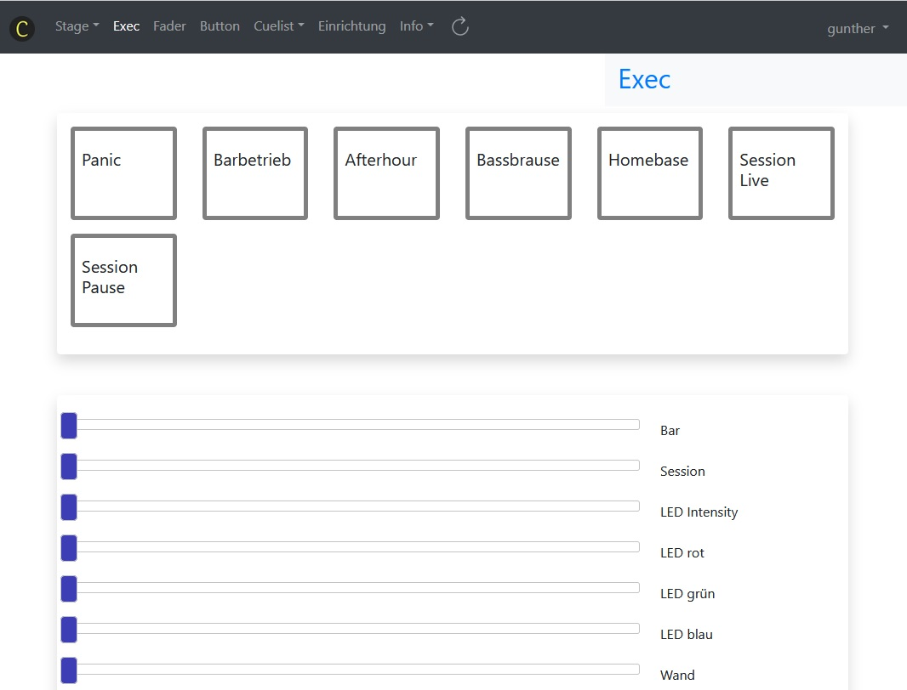

Navigation¶
Über die Startseite (erreichbar über das Symbol ) können die wichtigsten Module aufgerufen werden, über die Navigationsleiste können alle Module aufgerufen werden.
Hier ist eine Übersicht über die Navigation:
Stage¶
Stage
Stage kompakt
Single
Die erste Wahl in der Navigation ist die Stage. Dieses Modul besteht aus mehreren Webseiten. Die erste Wahl ist die Stage mit beweglichen und selektierbaren Elementen. Als Idee dahinter ist, die Geräte (= Heads) wie in einem Grundriss eines Raumplanes zu positionieren. Damit können die Geräte auf dem Bildschirm so angeordnet werden, wie sie sich im reellen Raum befinden.

Da bei Samrtphones und anderen kleinen Anzeigen der Platz oft nicht ausreicht, wird eine zweite Stage-Ansicht zur Verfügung gestellt: Stage kompakt. Hier werden die Elemente neben- und untereinander so platziert, dass der Bildschirm optimal genutzt wird (Responsive Design).
In der Single Seite kann mittels Navigationspfeilen <<,
<, >, >> jedes Gerät
einzeln in den Topcue geladen werden.
Für das ausgewählte Gerät werden im
Arbeitsbereich Fader angezeigt, die die einzelnen Attribute
bedienbar machen.
Exec¶
Die Exec-Seite enthält Buttons und Fader. Sie kann so konfiguriert werden, dass sie einen Button-Bereich, einen Fader-Bereich und einen weiteren Button-Bereich anzeigt. Jeder dieser Bereiche kann auch leer sein.
Das Ziel der Exec-Seite ist ein schneller und simpler Zugang zu Szenen. Auf die Editiermöglichkeiten wurde daher verzichtet. Zum Einrichten und Editieren der Exec-Seite wechselt man auf die Fader- oder Button-Seite. Genaueres dazu findest du unter Fader einrichten und Buttons einrichten .
Fader¶
Die Fader-Seite war der Startpunkt für die Arbeiten zu ClubDMX, diese Seite war das erste Ziel: Lichtszenen (Cues) über einen Webseiten-Fader zu bedienen.
Die dazu nötigen Voraussetzungen waren dann doch eher umfangreich, aber die für die Anwender wichtige Klarheit ist hier nach wie vor gegeben: Ein Fader für jeden Cue, ein Text zur Identifizierung, ein Button zur Ansicht, welche Geräte mit diesem Fader bedient werden und ein Button zum Editieren des Cues.
Neue Fader hinzufügen oder entfernen, die Reihenfolge der Fader ändern: Das alles ist möglich, und zwar in der Fadertabelle. Siehe Fader einrichten
In der Fadertabelle ist es auch möglich, einen MIDI-Regler einem Fader zuzuorden.
Button¶
Ganz gleich wie die Fader-Seite ist die Button-Seite für die einfache Bedienung konzipiert: Hier können Szenen (Cues) über die Webseite ein- oder ausgeschalten werden.
Buttons unterscheiden sich von Fadern dadurch, dass bei Buttons nur die Endpunkte 0 und 100% (Aus oder Ein) vom Benutzer gewählt werden können.
Der Übergang von Aus zu Ein beziehungsweise von Ein zu Aus kann mit Fade-Zeiten verknüpft werden. Dann bestimmt die Zeit in Sekunden einen linearen Übergang von Ursprungs- zum Zielzustand.
Es gibt drei verschiedene Arten von Buttons:
Schalter
Taster
Auswahlschalter
Ein Schalter verändert mit jedem Drücken seinen Status, von aus nach ein und wieder zurück. Ein Taster ist nur dann ein, wenn er gedrückt und gehalten wird. Das funktioniert nur auf einem Midi-Keyboard, nicht auf der Webseite.
Ein Auswahlschalter hängt mit anderen Auswahlschaltern zusammen: Mehrere Auswahlschalter bilden eine Gruppe (mit einer Gruppen-Nummer). Wird ein Schalter aus dieser Gruppe ein-geschalten, dann wird damit ein momentan aktiver Schalter aus dieser Gruppe aus-geschalten. Es kann also immer nur ein Schalter aus einer Gruppe ein sein.
Es können beliebig viele Buttons eingerichtet werden. Auswahlschalter müssen nicht nebeneinander platziert wrden, sie werden durch die Gruppen-Nummer als zusammengehörig definiert.
Auf der Button-Seite sind die für den Benutzer essentiellen Informationen enthalten: Text zur Identifizierung, Status (Aus: grauer Rand, Ein: roter Rand), weiters Buttons zur Ansicht der Cue-Informationen und zum Editieren.
In der Buttontabelle werden alle Infos zu den Buttons verwaltet. Hier können Buttons hinzugefügt, entfernt und in der Reihenfolge verändert werden. Weiters werden hier die Fade-Zeiten und die Zuordnung zu MIDI-Tasten eigetragen.
Einrichtung¶
Die Einrichtung von ClubDMX ist schon recht vielseitig, meine Hoffnung ist, dass sie trotzdem noch übersichtlich ist, um sich schnell zurecht zu finden.
Raum
Config
Bedienelemente
Midi
Datenbank
Admin
Die Einrichtung ist in verschiedene Bereiche gegliedert, die sich auf der Webseite in Tabs wiederfinden.
Im Raum-Tab werden die ersten und elementaren Einrichtungen getätigt: Einen neuen Raum anlegen, den Raum wechseln, den aktiven Raum umbenennen. Im Raum-Tab befinden sich auch die Optionen zum Backup und Restore.
Die nächste Ebene der Einrichtung ist die Config, deren Hardware-Komponenten sich im Config-Tab befinden. Das Kernstück der Konfiguration ist der Patch. Die zweite wesentliche Hardware-Komponente ist OLA, das die pyhsische Zuordnung über DMX zu den Geräten herstellt.
Falls für einen Raum mehrere Configs angelegt wurden, kann hier eine davon ausgewählt werden. Die aktuelle Config kann auch unter einem anderen Namen gespeichert werden.
Zur Erläuterung der Begriffe Raum und Config siehe Räume und Config .
Nach dem Öffnen einer Config werden der Patch ausgewählt, die OLA-Adresse und die Anzahl der Universen eingestellt.
Im Config-Tab wird auch OSC Input ein- oder ausgeschalten.
Im Bedienelemente-Tab sind die Tabellen auswählbar, die die zur Nutzung relevanten Seiten definieren: Stage, Fader und Buttons. Damit können für einen Anwendungsbereich die nötige Lokalisierung der Geräte auf der Stage und die passenden Fader und Buttons bereitgestellt werden.
Für den Fall, dass ClubDMX als Steuerung für eine Fix-Installation verwendet wird, die nach einem Ausschalten mit den letzten Einstellungen wieder hochgefahren werden soll, gibt es den Schalter Levels speichern.
Verschiedene Stil-Themen für die Webseite können im Bedienelemente-Tab ausgewählt werden.
Im Midi-Tab können maximal vier Midi-Geräte als Input definiert werden. Diese Midi-Geräte können Fadern und Buttons zugeordnet werden. Damit können Cues auch ohne Website bedient werden.
Der Datenbank-Tab ermöglicht einen Zugriff auf die Tabellen, die hier bearbeitet werden können. Je nach gewähltem Bearbeitungsmodus können hier Zell- oder Zeilenbearbeitungen gemacht werden.
Umfassende Erläuterungen zum Thema Einrichtung finden sich im Kapitel Einrichtung .
Info¶
Information zur Software und den aktuellen DMX-Output
DMX-Output: zeigt alle DMX-Werte, die nicht Null sind. Das ist zur Kontrolle gedacht, da man hier sieht, welche Berechnungen ClubDMX für die einzelnen Fader, Buttons und den Topcue vorgenommen hat.
Info: Kurz-Informationen
Doku: Umfangreiche Information zu verschiedenen Themen: Erste Schritte, Einrichtung, die einzelnen Navigations-Punkte (Module) und ein Bereich zu Grundlagen der Lichtsteuerung.
Benutzer-Datenbank¶
Die Benützung von ClubDMX ist nur mit einem Login möglich. Es gibt verschiedene Rollen der Berechtigung, zur Zeit sind das Basic, Standard und Admin.
Die genaue Kategorisierung, welche Aktionen mit welcher Rolle durchgeführt werden dürfen, ist noch in Arbeit. Den aktuellen Stand zu den Benutzer-Rollen siehe Benutzer .
OSC Input¶
Dieses Modul ermöglicht die Verbindung mit externen Programmen wie zum Beispiel Isadora . Über OSC können folgende Aktionen in ClubDMX ausgeführt werden:
/head <attribut> <headnr> <level>ermöglicht de Zugriff auf sämtliche Geräte und deren Attribute.<attribut>bezeichnet den Attribut-Namen, so wie er in der Head-Definitionangelegt ist.<headnr>ist eine Ganzzahl entsprechend der Headnummer im Patch.<level>ist eine Gleitzahl im Bereich zwischen 0 und 1./clearleert den Topcue ./fader/<nummer> <level>ändert den Level eines Faders./exefader/<nummer> <level>ändert den Level eines Faders aus der Exec-Seite.<nummer>ist eine Ganzzahl entsprechend der Fadertabelle.<level>ist eine Gleitzahl im Bereich zwischen 0 und 1./button/<nummer>betätigt einen Button./exebutton1/<nummer>betätigt einen Button aus der oberen Reihe der Exec-Seite./exebutton2/<nummer>betätigt einen Button aus der unteren Reihe der Exec-Seite.<nummer>ist eine Ganzzahl entsprechend der Buttontabelle.